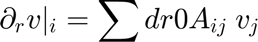

Contents
Generate collocation matrices for 2D domain
function to set the numerical collocation matrices.
function [r0A, z0A, nrA, nzA, ddr0A, ddrr0A, ddz0A, ddzz0A, Ia, Ib, Ja, Jb] = ... collocationmatrices2th(nr, nz, NRegion)
% % First we compute the total number on nodes in radial and axial direction nrA = nr(1) + nr(2) - 1; % Total radial points nzA = nz(1); % Total axial points
1D Differentiation Matrices
Compute the 1D collocation differentiation matrices for the radial direction of each region. This allows the radial numerical derivative of a function 'v' at node 'i' to be computed from the array of node values 'v_j' using the formula:

In the radial direction, a Chebyshev approximation is used. A transformation (tanh mapping, specifically Chevitanh/Chevitanh_inverse) is applied to cluster nodes near one of the domain boundaries (r=-1, r=0, r=1). This clustering helps capture boundary layer effects or sharp gradients.
alphar = 3.;
[r0A1, dr0A{1}, drr0A{1}] = Chevitanh(nr(1)-1, -1, 0, alphar); % Lower block
[r0A2, dr0A{2}, drr0A{2}] = Chevitanh_inverse(nr(2)-1, 0, 1, alphar); % Upper block
r0A = [r0A1(1:nr(1)), r0A2(2:nr(2))]; % Combined radial coordinates
In the axial direction, a second-order finite difference approximation is used.
[z0A, dz0A{1}, dzz0A{1}] = finites2thsparse(nz(1), 1); % Axial matrices
[z0A, dz0A{2}, dzz0A{2}] = finites2thsparse(nz(2), 1); % Axial matrices
Region Indexing
Define the index ranges (start and end points) corresponding to each region within the overall combined numerical grid. Ia, Ib define radial index ranges. Ja, Jb define axial index ranges. Example assumes 2 radial regions stacked axially (same axial range).
Ia = [1, nr(1)]; % Radial indices for region 1 Ib = [nr(1), nrA]; % Radial indices for region 2 (starts at the interface node) Ja = [1, 1]; % Axial indices for region 1 (assuming starts at index 1) Jb = [nzA, nzA]; % Axial indices for region 2 (assuming ends at index nzA for both) % <html> % <object type="image/svg+xml" data="grid.svg" width="400" height="300"> </object> % </html> %
Extend Regional Matrices to Full Domain (Sparse Embedding)
Extend the individual "regional" differentiation matrices to operate on the entire computational domain by embedding them into larger identity matrices. This prepares them for assembly into global operators.
ddr0A = cell(1, NRegion); % First radial derivative ddrr0A = cell(1, NRegion); % Second radial derivative ddz0A = cell(1, NRegion); % First axial derivative ddzz0A = cell(1, NRegion); % Second axial derivative for i=1:NRegion ddr0A{i}=eye(nrA,nrA); ddrr0A{i}=eye(nrA,nrA); ddz0A{i}=eye(nzA,nzA); ddzz0A{i}=eye(nzA,nzA); ddr0A{i}(Ia(i):Ib(i), Ia(i):Ib(i)) = dr0A{i}; ddrr0A{i}(Ia(i):Ib(i), Ia(i):Ib(i)) = drr0A{i}; ddz0A{i}(Ja(i):Jb(i), Ja(i):Jb(i)) = dz0A{i}; ddzz0A{i}(Ja(i):Jb(i), Ja(i):Jb(i)) = dzz0A{i}; end
Create Masks and Global Operators using Kronecker Products
Create masks to ensure that derivatives calculated for one region only use function values from within that same region. Derivatives in one region should not depend on values in neighboring regions at this stage (coupling happens later via boundary/interface conditions).
mask = cell(NRegion, 1); for k = 1:NRegion mask{k} = zeros(nrA, nzA); mask{k}(Ia(k):Ib(k), Ja(k):Jb(k)) = 1; % Set block region end
Construct the full-domain differentiation matrices (sparse) for each region using Kronecker products (kron) and the masks. The resulting matrices operate on vectors where unknowns are ordered column-wise (fastest index is radial).
ntA = nrA * nzA; % Total number of points in the combined grid Iz = speye(nzA); % Sparse identity matrix for axial dimension Ir = speye(nrA); % Sparse identity matrix for radial dimension for k = 1:NRegion % Reshape mask to a column vector matching the vectorized grid ordering c = reshape(mask{k}, ntA, 1); % Create sparse diagonal matrix from the mask vector MaskDiag = spdiags(c, 0, ntA, ntA); % Apply mask to the Kronecker product to zero out contributions outside region 'k' % kron(ddz0A{k}, Ir) creates the axial derivative operator for the full grid ddz0A{k} = MaskDiag * kron(ddz0A{k}, Ir); % First axial derivative ddzz0A{k} = MaskDiag * kron(ddzz0A{k}, Ir); % Second axial derivative % kron(Iz, ddr0A{k}) creates the radial derivative operator for the full grid ddr0A{k} = MaskDiag * kron(Iz, ddr0A{k}); % First radial derivative ddrr0A{k} = MaskDiag * kron(Iz, ddrr0A{k}); % Second radial derivative end
The full domain matrices of each domain are created. ntA = nrA * nzA; Iz = speye(nzA); Ir = speye(nrA); for k = 1:NRegion c = reshape(mask{k}, ntA, 1); ddz0A{k} = spdiags(c, 0, ntA, ntA) * kron(ddz0A{k}, Ir); % Axial derivatives ddzz0A{k} = spdiags(c, 0, ntA, ntA) * kron(ddzz0A{k}, Ir); ddr0A{k} = spdiags(c, 0, ntA, ntA) * kron(Iz, ddr0A{k}); % Radial derivatives ddrr0A{k} = spdiags(c, 0, ntA, ntA) * kron(Iz, ddrr0A{k}); end
end % End of function collocationmatrices2th